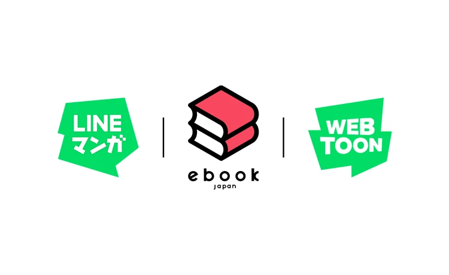

OLD MAN OTAKU / MANGA & PUBLISHING
WEBTOON Bets ¥10 Billion on Japanese Originals. What Does That Mean for Creators?
A three-year investment plan, a proposed Japanese CANVAS launch, and a bigger push for international releases put original comics in focus.

WEBTOON is putting a substantial number behind its ambitions for Japanese comics: ¥10 billion over three years, approximately $63 million using the company’s stated conversion.
In its October 22 announcement, WEBTOON Entertainment said Japanese subsidiary LINE Digital Frontier will invest in original content from Japan. The plan includes production studios, collaborations with publishers and external studios, and support for individual creators.
This is planned investment. It is not a pot of money already handed out, and the announcement does not establish a general application process or guaranteed payments for independent creators.
A larger route from creation to distribution
The announcement also outlines plans to introduce WEBTOON CANVAS in Japan by 2027. CANVAS lets creators publish their own comics; qualifying creators can receive revenue through programs such as advertising.
Separately, WEBTOON’s Global Drop initiative aims to coordinate international releases. The company says Japanese works will join that program. These are connected plans, but a CANVAS upload does not automatically secure funding, translation, promotion, or an adaptation.
The opportunity—and the questions
RogueVerse analysis: The interesting part is how production and distribution fit together. Helping a comic get made is one challenge. Helping readers discover it across languages is another. A company willing to support both could give selected projects a stronger start.
For independent creators, the practical questions are more specific than the headline number. Who qualifies for support? What rights would a partnership require? Who handles localization? What happens when an audience grows outside the original market?
Those answers will matter more to an individual creator than the size of the announcement. A worldwide platform can offer reach, but reach and a sustainable creative career are different outcomes.
Our read: this is a consequential commitment worth following as programs become concrete. Creators should watch for official submission details, prepare a clear project pitch, and understand any proposed terms before treating the investment as an available opportunity.
The ambition is clear. The next story will be how much of it becomes useful, accessible support for the people making the comics.
Copyright & image ownership
Image: LINE Digital Frontier, via its PR TIMES announcement. Logos and trademarks belong to their respective owners.
Third-party characters, artwork, titles, logos and trademarks belong to their respective rights holders. Images accompany editorial reporting and commentary; RogueVerse Studio claims no ownership of third-party IP and is not affiliated with or endorsed by its rights holders.
Article text and RogueVerse branding © 2026 RogueVerse Studio. All rights reserved.